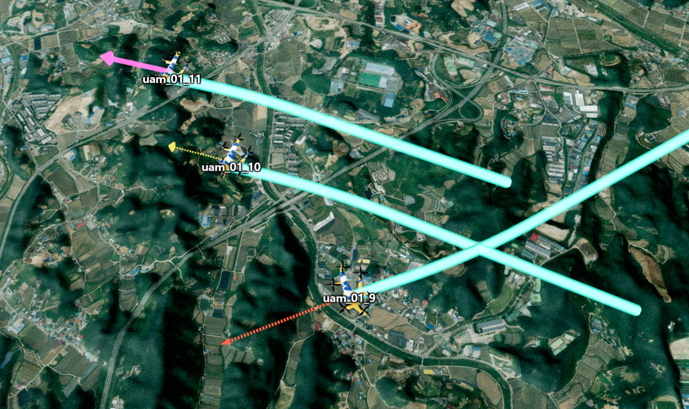

방향 화살표 시작하기
목차

UDirectionArrowGroup은 여러 이동체의 진행 방향을 화살표로 표시하는 객체입니다.
그룹 하나가 여러 화살표를 InstancedMesh로 관리하므로, 이동체마다 그룹을 만들지 않고 하나의 그룹에 화살표를 추가해서 사용합니다.
이 문서의 예제는 app과 drone이 생성되어 있고, drone이 U3dMultipleComponentLayer.addPosition()으로 만든 U3dComponentPosition이라고 가정합니다.
앱과 컴포넌트를 만드는 방법은 3D 공간에 사물 출력 - 레이어 생성하기와 3D 공간에 사물 출력 - 컴포넌트 생성하기를 참고합니다.
1. 이동체에 방향 화살표 연결하기
먼저 UDirectionArrowGroup을 생성하고 app.getExternalScene()이 반환하는 Scene에 직접 추가합니다.
그다음 addArrow()의 target에 이동체를 전달하면 화살표가 대상의 위치와 방향을 따라갑니다.
capacity는 그룹이 동시에 관리할 수 있는 최대 화살표 수입니다.
현재 화살표 수가 capacity에 도달하면 addArrow()가 예외를 발생시키므로 예상되는 최대 이동체 수 이상으로 설정합니다.
API
new GeOnDT.effect.UDirectionArrowGroup(opt) : 여러 방향 화살표를 관리하는 그룹을 생성하는 생성자
매개변수
opt(UDirectionArrowGroupCO) : 그룹의 기본 설정opt.name(string) : 그룹 이름. 기본값:'UDirectionArrowGroup'opt.capacity(number) : 그룹이 관리할 수 있는 최대 화살표 수. 기본값:10000opt.autoSync(boolean) : 렌더 갱신 시 대상의 위치와 방향을 자동으로 동기화할지 여부. 기본값:falseopt.cullByCamera(boolean) :update()할 때 카메라 기준 거리 및 화면 영역 컬링을 사용할지 여부. 기본값:trueopt.maxDistance(number) : 카메라에서 이 거리보다 멀리 있는 화살표를 숨길 기준 거리(m)opt.screenCullMargin(number) : 화면 밖 컬링에 적용할 여유 비율. 기본값:0.15opt.targetForward(Vector3Like | number[]) : 대상 객체의 로컬 기준 전방 벡터. 기본값:{x: 0, y: 1, z: 0}opt.lineLength(number) : 화살표 꼬리 길이(m). 기본값:50opt.lineThickness(number) : 화살표 꼬리 두께(m). 기본값:1opt.headLength(number) : 화살촉 길이(m). 기본값:lineLength * 0.25opt.headRadius(number) : 화살촉 반지름(m). 기본값:lineThickness * 2.5opt.shaftStyle('solid' | 'dashed') : 화살표 꼬리 모양. 기본값:'solid'opt.dashLength(number) : 점선 한 구간의 길이(m). 기본값:lineLength * 0.12opt.gapLength(number) : 점선 사이의 간격(m). 기본값:lineLength * 0.08opt.color(ColorRepresentation | function) : 화살표 색상 또는 색상을 반환하는 함수. 기본값:0x00aaffopt.opacity(number | function) : 화살표 투명도(0~1) 또는 투명도를 반환하는 함수. 기본값:1
API
UDirectionArrowGroup.addArrow(opt) : 화살표 하나를 그룹에 추가하는 함수
매개변수
opt(UDirectionArrowGroupCO) : 추가할 화살표의 설정opt.target(unknown) : 위치와 방향을 따라갈 대상 객체opt.visible(boolean) : 화살표 표시 여부. 기본값:trueopt.localOffset(boolean) :offset을 대상의 방향 기준 로컬 좌표로 적용할지 여부. 기본값:trueopt.offset(Vector3Like | number[]) : 대상 위치에 더할 오프셋(m). 기본값:{x: 0, y: 0, z: 0}opt.rotationOffset(Vector3Like | number[]) : 방향을 정렬한 뒤 추가할 회전값(도). 기본값:{x: 0, y: 0, z: 0}opt.position(Vector3Like | number[]) : 대상이 없을 때 사용할 월드 좌표opt.direction(Vector3Like | number[]) : 대상이 없을 때 사용할 방향 벡터. 기본값:{x: 0, y: 1, z: 0}opt.lookAt(Vector3Like | number[]) : 화살표가 바라볼 월드 좌표
그룹 생성자에 사용할 수 있는 길이, 색상과 투명도 등의 설정도 addArrow()에 전달해 개별 화살표의 초기값을 지정할 수 있습니다.
반환값
return(number) : 생성된 화살표의 ID
1. 드론 진행 방향 표시 예제
autoSync를 true로 설정하면 렌더 갱신 시 drone의 위치와 회전을 자동으로 따라갑니다.addArrow()가 반환한 ID는 이후 특정 화살표의 모양을 바꾸거나 제거할 때 사용합니다.
const directionArrows = new GeOnDT.effect.UDirectionArrowGroup({
name: 'droneDirectionArrows',
capacity: 100,
autoSync: true,
maxDistance: 3000,
lineLength: 80,
lineThickness: 2,
headLength: 20,
headRadius: 5,
shaftStyle: 'dashed',
dashLength: 6,
gapLength: 4,
color: '#ff3b30',
opacity: 1
});
app.getExternalScene().add(directionArrows);
const droneArrowId = directionArrows.addArrow({
target: drone,
offset: {x: 0, y: 0, z: 24}
});
// 카메라 기준 컬링에 사용할 카메라를 전달하고 현재 상태를 갱신합니다.
directionArrows.update(app.getCamera());
모델의 실제 전방 축이 기본값인 +Y와 다르면 그룹을 만들 때 targetForward를 모델의 로컬 전방 벡터로 지정합니다.
화살표가 대상과 겹치면 offset을 사용해 부착 위치를 조정합니다.
2. 화살표 모양 변경하기
그룹의 setter에 화살표 ID를 전달하면 해당 화살표만 변경합니다.
ID를 생략하면 현재 그룹에 들어 있는 모든 화살표에 같은 설정을 적용합니다.
여러 속성을 한 번에 변경할 때는 applyArrowUpdate()를 사용합니다.
색상, 투명도와 길이처럼 자주 바꾸는 값은 인스턴스 속성으로 처리되지만, radialSegments와 depthTest는 렌더링 버킷 구성을 변경하므로 자주 바꾸지 않는 것이 좋습니다.
API
UDirectionArrowGroup.applyArrowUpdate(id, opt) : 지정한 화살표의 여러 속성을 한 번에 변경하는 함수
매개변수
id(number) : 변경할 화살표 ID. 필수opt(UDirectionArrowGroupCO) : 변경할 속성
API
UDirectionArrowGroup.setColor(color, id) : 화살표 색상을 변경하는 함수
UDirectionArrowGroup.setOpacity(opacity, id) : 화살표 투명도를 변경하는 함수
UDirectionArrowGroup.setLineLength(lineLength, id) : 화살표 꼬리 길이를 변경하는 함수
UDirectionArrowGroup.setLineThickness(lineThickness, id) : 화살표 꼬리 두께를 변경하는 함수
UDirectionArrowGroup.setHeadLength(headLength, id) : 화살촉 길이를 변경하는 함수
UDirectionArrowGroup.setHeadRadius(headRadius, id) : 화살촉 반지름을 변경하는 함수
UDirectionArrowGroup.setShaftStyle(shaftStyle, id) : 화살표 꼬리를 실선 또는 점선으로 변경하는 함수
UDirectionArrowGroup.setOffset(offset, id) : 대상 위치에 더할 오프셋을 변경하는 함수
각 setter의 두 번째 매개변수인 id는 생략할 수 있으며, 생략하면 그룹의 모든 화살표를 변경합니다.
1. 화살표별 스타일 적용 예제
directionArrows.applyArrowUpdate(droneArrowId, {
color: '#ffd60a',
opacity: 0.9,
lineLength: 220,
lineThickness: 3,
headLength: 30,
headRadius: 15,
shaftStyle: 'solid',
offset: {x: 0, y: 0, z: 30}
});
2. 그룹 전체 스타일 변경 예제
directionArrows.setColor('#00ffff');
directionArrows.setOpacity(0.7);
directionArrows.setLineThickness(4);

3. 표시 상태와 거리 컬링 제어하기
setVisible()에 ID를 전달하면 특정 화살표만 표시하거나 숨기고, ID를 생략하면 그룹의 모든 화살표를 제어합니다.
숨긴 화살표는 그룹에 남아 있으므로 다시 표시할 수 있습니다.
maxDistance 또는 화면 영역 컬링을 사용한다면 카메라가 움직일 때 update(app.getCamera())를 호출합니다.
이 호출은 대상의 현재 위치와 방향도 함께 동기화합니다.autoSync가 false라면 대상이 움직일 때도 update()를 직접 호출해야 합니다.
API
UDirectionArrowGroup.setVisible(visible, id) : 화살표 표시 여부를 변경하는 함수
매개변수
visible(boolean) : 표시 여부. 필수id(number) : 변경할 화살표 ID. 생략하면 모든 화살표를 변경
API
UDirectionArrowGroup.update(idOrCamera, camera) : 대상의 위치와 방향 및 카메라 컬링 상태를 갱신하는 함수
매개변수
idOrCamera(number | Camera) : 특정 화살표의 ID 또는 렌더 카메라camera(Camera) : 첫 번째 매개변수에 ID를 전달했을 때 사용할 렌더 카메라
1. 화면 전체 표시 상태 제어 예제
다음 예제는 화면에 id="show-direction-arrow"인 체크박스가 있다고 가정합니다.
const showDirectionArrowCheckbox = document.querySelector('#show-direction-arrow');
function setDirectionArrowVisible(visible) {
directionArrows.setVisible(visible);
}
function onDirectionArrowChange() {
setDirectionArrowVisible(this.checked);
}
showDirectionArrowCheckbox.addEventListener('change', onDirectionArrowChange);
2. 카메라 이동에 맞춰 컬링 갱신 예제
앱의 렌더 루프나 카메라 변경 처리에서 다음 함수를 호출합니다.
function updateDirectionArrowCulling() {
directionArrows.update(app.getCamera());
}
4. 화살표 제거하고 자원 정리하기
이동체 하나를 삭제할 때는 removeArrow()에 화살표 ID 또는 연결했던 대상 객체를 전달합니다.
대상 객체를 전달하면 그 대상에 연결된 화살표를 모두 제거합니다.
clear()는 그룹의 화살표를 모두 제거하지만 그룹이 만든 geometry와 material은 재사용할 수 있도록 유지합니다.
기능을 완전히 종료할 때는 그룹을 Scene에서 제거한 뒤 dispose()를 호출해 GPU 자원까지 해제합니다.
API
UDirectionArrowGroup.removeArrow(targetOrId) : ID 또는 대상 객체에 해당하는 화살표를 제거하는 함수
매개변수
targetOrId(number | unknown) : 제거할 화살표 ID 또는 연결된 대상 객체. 필수
API
UDirectionArrowGroup.clear() : 그룹에 들어 있는 모든 화살표를 제거하는 함수
API
UDirectionArrowGroup.dispose() : 그룹이 소유한 geometry와 material을 해제하는 함수
1. 이동체와 함께 화살표 제거 예제
directionArrows.removeArrow(drone);
animationLayer.removeComponentByName(drone.name);
2. 예제 종료 시 전체 자원 정리
등록한 UI 이벤트와 렌더 갱신 함수는 사용하는 이벤트 시스템에 맞게 먼저 해제합니다.
그다음 Scene에서 그룹을 제거하고 GPU 자원을 정리합니다.
showDirectionArrowCheckbox.removeEventListener('change', onDirectionArrowChange);
app.getExternalScene().remove(directionArrows);
directionArrows.dispose();